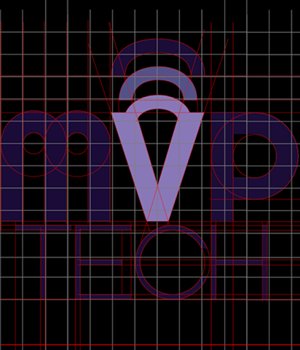
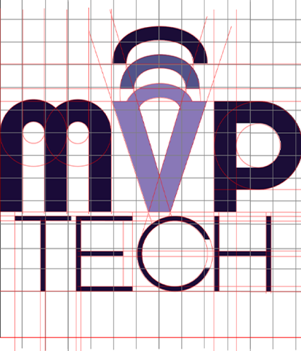

Identidade Visual
desenvolvida para a empresa de
Tecnologia
da
Informação
MVP
Tech:
solução em
TI
atendimento
on-line. UX/UI Design do aplicativo e site, para manutenção e concerto de PC s/ MAC s/ Tablets / Celulares , está em desenvolvimento com um contrato de confidencialidade ainda vigente.
P or esse motivo, ainda não posso divulgar nada dessa plataforma UI ( Interfaces de Usuário ).
on-line. UX/UI Design do aplicativo e site, para manutenção e concerto de PC s/ MAC s/ Tablets / Celulares , está em desenvolvimento com um contrato de confidencialidade ainda vigente.
P or esse motivo, ainda não posso divulgar nada dessa plataforma UI ( Interfaces de Usuário ).
Detalhes
Mais+

MVP TECH
Soluções em T.I.
Soluções em T.I.

